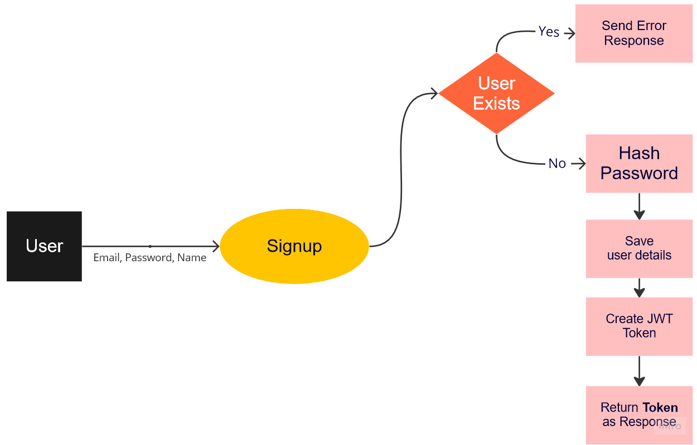

Authentication Request Handlers
Our server is up and running. So how about we first secure our APIs.
Route/Request Handlers
In actix_web every route needs to have a request handler, in the
last section we created a simple route handler using a closure.
For more sophisticated handlers we can create a function and use it.
```rust
use actix_web;
async fn hello() -> actix_web::HttpResponse {
HttpResponse::Ok()
.content_type(ContentType::plaintext())
.body("Hello World")
}
// Usage
...
.route("/hello", web::get().to(hello))
...
```
A request handler function takes any incoming data like query params, AppData and returns aything that can be converted to
HttpResponse and if the handler can produce errors, return signature changes.
#![allow(unused_variables)] fn main() { async fn hello() -> Result<actix_web::HttpResponse, actix_web::Error> { ... }
actix_web also makes it easier for us to define new routes using an attribute macro route, instead of using .route() we can define our routes as
#![allow(unused_variables)] fn main() { #[route("/hello", method="GET")] ... }
Creating DTOs for request handlers
For satisfying rust's type safety, we need to create new types for incoming body for our requests such as
{
"email": "example@example.com",
"password": "supersecureone"
}
these types can generally be called DTOs short for Data Transfer Object
So let's create them in src/api/dtos/auth.rs
#![allow(unused_variables)] fn main() { // src/apis/dtos/auth.rs #[derive(Debug, serde::Deserialize)] pub struct LoginDTO { pub email: String, pub password: String, } #[derive(Debug, serde::Serialize, serde::Deserialize)] pub struct LoginResponseDTO { pub id: String, pub email: String, pub token: String, } pub type SignupResponseDTO = LoginResponseDTO; #[derive(Debug, serde::Serialize, serde::Deserialize)] pub struct SignupRequestDTO { pub email: String, pub password: String, pub name: String, } }
derive is again here to help us, in addition to Debug we are adding serde::Deserialze for LoginDTO as we need to deserialize from string to our struct.
For our response dtos SignupResponseDTO and LoginResponseDTO we need to serialize them to string for sending response to browser.
As we have created a new directory here, owing to rust's module system, we need to create a src/api/dtos/mod.rs as well and then use the submodule dtos in our api module
#![allow(unused_variables)] fn main() { // src/api/dtos/mod.rs pub mod auth; }
#![allow(unused_variables)] fn main() { //src/api/mod.rs mod dtos; // We don't necessarily need declare dtos [pub] as we won't using it outside of api module ... }
Signup process
Here's an easy flowchart explaining what our signup process would look like

Few important functionalities, which are not implemented yet are hashing password and creating/encoding a JWT token
You can read more about JWT, basically they are encoded strings which contain useful information about a logged
in user and helps us verify users' identity. Our client needs to store this token on login/sigup and send the token back to server
on every request containing user specific or sensitive data.
Hashing Password
We hash passwords so that no can read the plain text version or recover the plain text from any encrypted text.
We'll be using a rust crate argon2 to do the hashing for us.